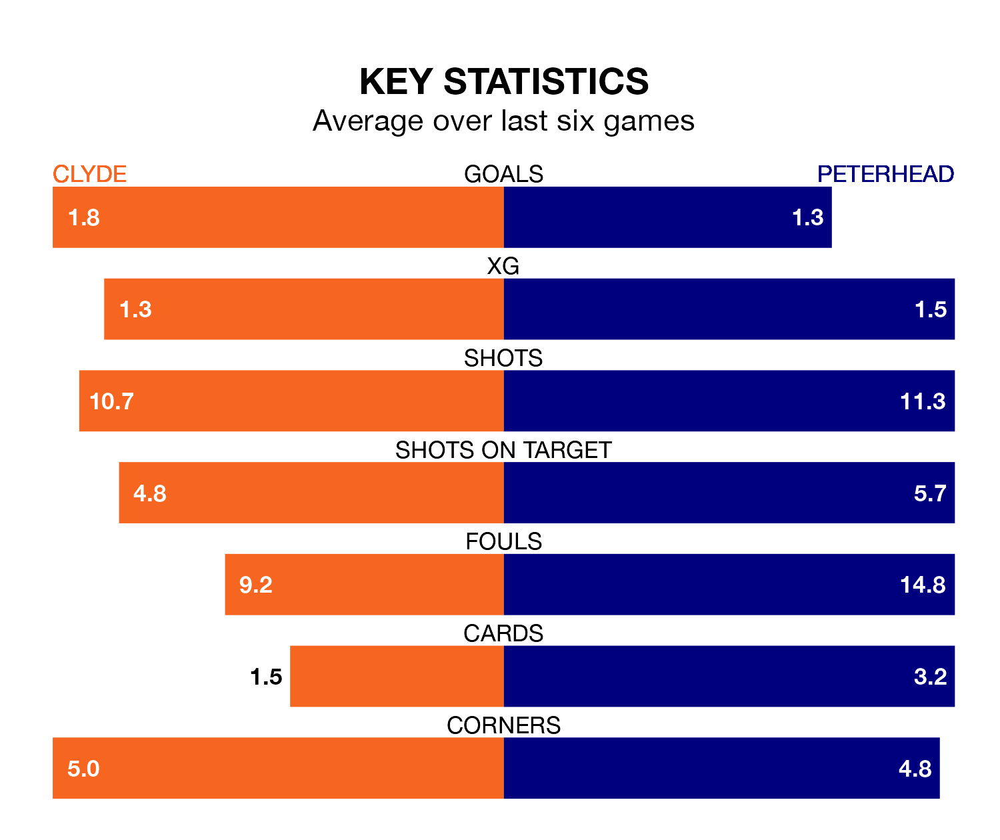

Mid-season relegation candidates Clyde face a challenge against high-flying Peterhead at the Fountain of Youth Stadium on Saturday.
Clyde are rooted to the bottom of the League Two table, and have picked up just two wins and eight draws in their 21 games to date.
The Blue Toon, meanwhile, are second in the standings with 39 points, having won 12 and drawn three of their first 22 matches, and are 13 points behind table-toppers Stenhousemuir.
With 37 goals in 22 games so far this season, Peterhead are the league's second-highest scorers with 1.7 goals per game. And they are conceding fewer than average, letting in 24 goals at a rate of 1.1 per game.
Clyde, meanwhile, are below average scorers, with 1.1 goals per game, compared to a league average of 1.4. They have conceded 2.0 goals per game.
In the last 10 years, Clyde and Peterhead have played each other on 26 occasions. Clyde won four of them, Peterhead 16, and they drew six times.
On average, the Bully Wee scored 0.9 goals and the Blue Toon 1.8 in those matches.
Their last meeting was on December 16, when Peterhead won 2-1 at home.
The Bully Wee are in disappointing form in League Two, with one win and three draws from their last six games.
With two wins and a draw over that period, the Blue Toon's form is slightly better – they have taken seven points from 18, compared to the hosts' six.
In Martin Rennie, Clyde have one of the league's most on-form strikers so far this season. He has notched six goals in 15 appearances, to sit sixth in the scoring charts.
The away team's top scorers, with six goals each, are Hamish Ritchie, Conor O’Keefe and Kieran Shanks.
Clyde's last match was on Tuesday, a 2-1 loss against Elgin City, with Liam Scullion getting the goal for the Bully Wee.
Peterhead beat Stenhousemuir 2-1 last time out, on January 27, with Ritchie on the scoresheet.
Saturday's match will be refereed by Duncan Williams, who has taken charge of seven League Two games so far this season, issuing two red cards and booking 35 players. He has awarded two penalties.
The last Clyde game Williams refereed was a 2-1 home loss to Stenhousemuir on December 30. His last Peterhead match was their 2-1 win away at Spartans on November 18.
Updated: 10:40 (UTC), 01/02/24